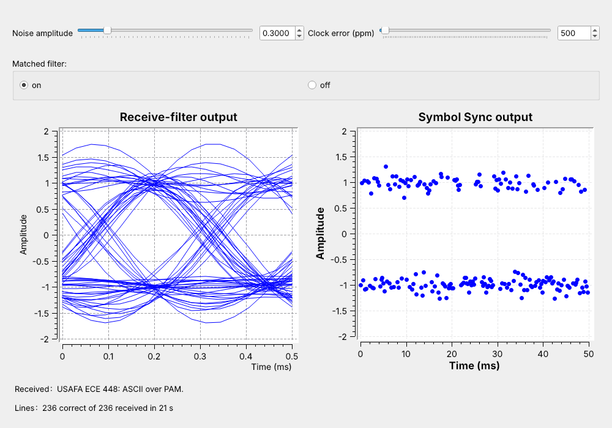
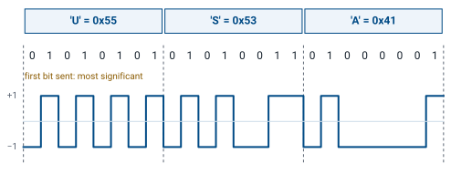
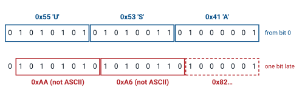
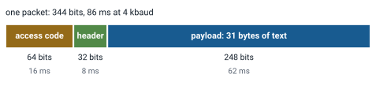
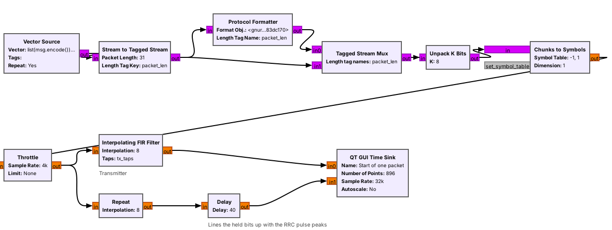
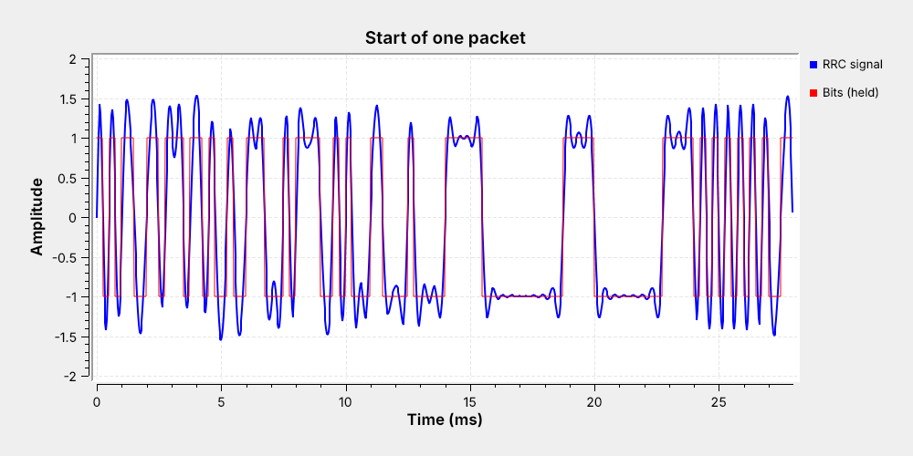
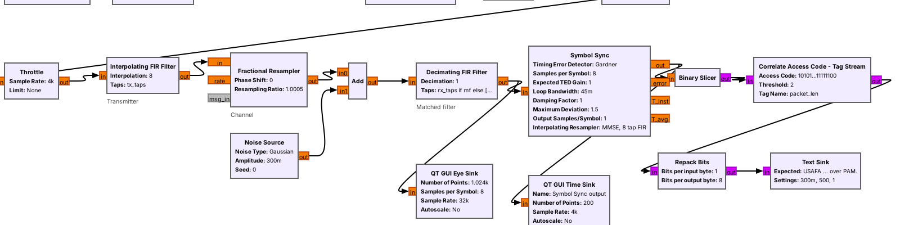
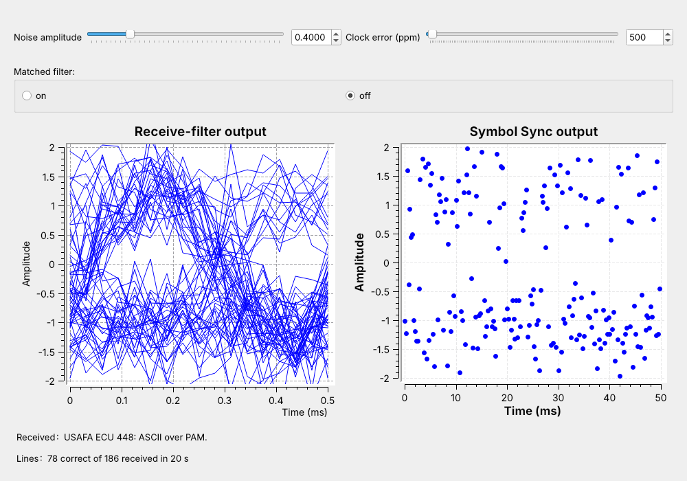
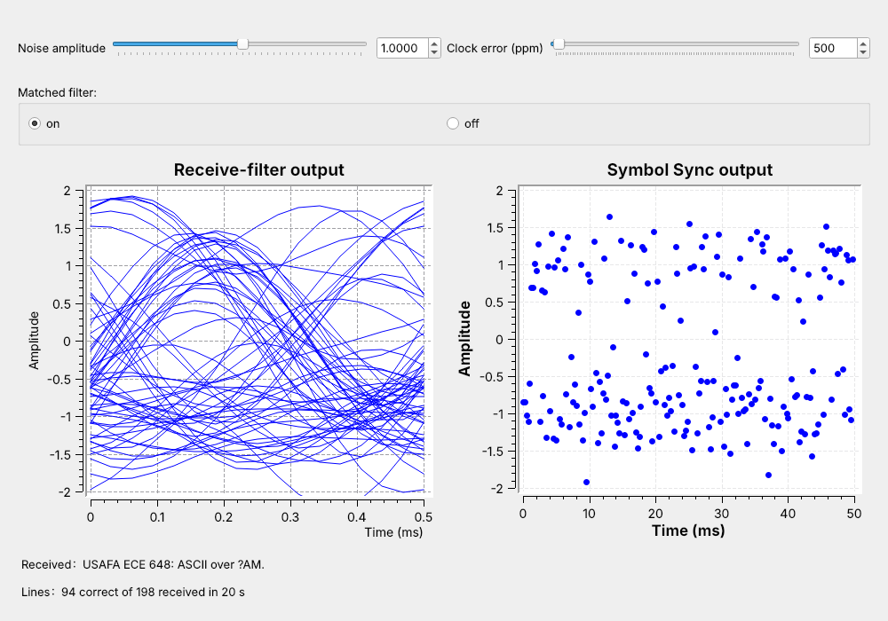
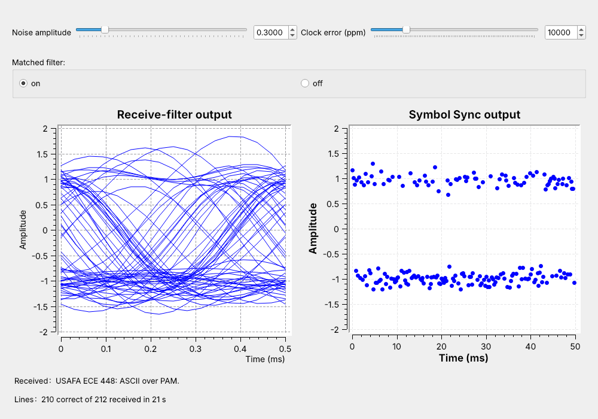

L10 - ASCII over PAM#
ASCII over PAM
Text through Lesson 9’s PAM link: bits, packets, the access code, and what noise and the matched filter do.
Lesson 10 · Module 4: Digital Modulation · Dr. Neil Rogers
Slides
Learning Objectives
- I can implement a PAM link that transmits and receives ASCII text end-to-end.
A Line of Text over PAM

The L9 receiver ends with one sample per symbol.
Today we turn those samples back into text.
The figure is today’s flowgraph, L10-pam-link.grc, running. A line of text goes in at the transmitter, crosses a channel with noise and a clock error, and comes out of the receiver intact, about 11 times a second. The left plot is the eye after the receive filter, the matched filter, and the right plot is the output of Symbol Sync, the same two checks Lesson 9 used.
Lesson 9 built everything between the symbols and the samples. This lesson adds the two ends, in the order of the 2025 reading, Mathys’s “Motivating Undergraduate Communication Theory Using GNU Radio”, linked under Downloads: text to bits (Parts 1 and 2, where packets replace the reading’s hand-set delay), bits to a waveform (Part 3), the receiver (Part 4), the waveform through noise (Part 5), and the matched filter that cleans it up (Part 6). At the transmitter, text becomes bytes, bytes become bits, and the bits go out in packets. At the receiver, a slicer turns each sample back into a bit, and the receiver searches the bits for the start of each packet before it turns them back into text.
Part 1: Text to Bits

ASCII gives each character one byte: ‘U’ is 0x55.
Unpack K Bits sends each byte as 8 bits, most significant first.
ASCII assigns each letter, digit, and punctuation mark a number from 0 to 127, and a computer stores each one in a byte. The figure starts with ‘U’, which is 0x55, or 01010101 in binary. In GNU Radio, the Python expression list(msg.encode()) + [10] in a Vector Source turns the message into its bytes and adds a newline, byte 10, to mark the end of the line.
Unpack K Bits with K = 8 splits each byte into 8 bits, most significant bit (MSB) first, and Chunks to Symbols maps each bit to a level, 0 to \(-1\) and 1 to \(+1\), as in Lesson 9. The same text goes out as 4-PAM with Unpack K Bits at K = 2 and a four-level table, two bits per symbol. Our message, USAFA ECE 448: ASCII over PAM., is 30 characters, so with the newline it is 31 bytes, or 248 bits. At 4 kbaud that is 62 ms of signal.
Where Does a Byte Start?

Read from the right bit, the bytes are ‘U’, ‘S’, ‘A’.
One bit late, they are 0xAA, 0xA6, 0x82: not text.
The receiver’s slicer outputs one bit per symbol, but nothing in the bit stream marks where a byte begins. A receiver that starts listening in the middle of the message, or whose timing slips and drops or repeats a bit, has to guess. The figure shows what a wrong guess does. Grouped from the first bit, the 24 bits read “USA”; grouped from one bit later, they read 0xAA, 0xA6, and 0x82, which are not ASCII characters.
The same problem appears with any serial data, and the solution is also the same: the transmitter sends a known pattern before the data, and the receiver looks for that pattern. When it finds the pattern, it knows exactly where the first byte of the data starts.
Part 2: Packets

A 64-bit access code marks the start of each packet.
A 32-bit header carries the length, twice.
We send each line of text as a packet, the same format the L8 link used. A packet starts with a 64-bit access code, a fixed pattern the receiver knows in advance. Then comes a 32-bit header that holds the payload length in bytes as a 16-bit number, sent twice so the receiver can check it. The payload, the line of text, comes last.
The header and access code add 96 bits to our 248, so one packet is 344 bits and takes 86 ms at 4 kbaud. The link sends 11.6 packets a second, and 72% of the bits it sends are text. A longer line spreads the same 96 bits over more text, and a 200-byte payload raises that share to 94%.
Part 3: Bits to a Waveform

Protocol Formatter writes the header; Tagged Stream Mux puts it in front.
From Chunks to Symbols on, this is the L9 transmitter: RRC pulses, not rectangles.
The packet blocks work on tagged streams: each run of bytes that belongs together carries a tag named packet_len at its first byte, holding its length. Stream to Tagged Stream cuts the repeating message into 31-byte lines and tags each one. The Protocol Formatter reads each line’s length and writes the 12-byte access code and header for it, using the format object digital.header_format_default(digital.packet_utils.default_access_code, 0) stored in the variable hdr. The Tagged Stream Mux sends the header, then the line.
From Unpack K Bits on, the transmitter is Lesson 9’s: 2-PAM levels, a Throttle at the 4 kbaud symbol rate, and an Interpolating FIR Filter with the same RRC taps, \(\alpha = 0.35\), sps = 8, and 32 kHz sampling. The second branch holds each bit for 8 samples, the rectangular pulse of Lesson 9, so the time sink can show the rectangular and the RRC waveform of the same bits together, and the frequency sink shows why the link sends the RRC one.
One Packet on the Wire

The access code fills the first 16 ms.
The header sends the length, 31, twice, from 16 to 24 ms.
The payload starts at 24 ms with ‘U’, then ‘S’.
The time sink triggers on the packet_len tag, so every sweep starts at the first bit of a packet and shows its first 112 bits, 28 ms. The first 64 bits are the access code, 10101100 11011101 .... The header follows at 16 ms: 31 is 0000000000011111 in 16 bits, so the signal sits at \(-1\) for 11 bits and at \(+1\) for 5, and then repeats. The payload starts at 24 ms with ‘U’, 01010101, and ‘S’, 01010011.
The blue RRC signal sits near \(\pm 1\) in the middle of each bit but misses it by as much as 0.4, because one RRC filter alone leaves some ISI, as Lesson 9’s transmit eye showed. The receiver’s matched filter removes that ISI at the sampling instants.
Packet Timing
At \(R_s = 4\) kbaud with one bit per symbol, each bit lasts 0.25 ms. For a payload of \(N\) bytes, a packet holds
and lasts \(n/R_s\). Our line has \(N = 31\):
Payload |
Bits per packet |
Packet time |
Packets per second |
Text share |
|---|---|---|---|---|
1 byte (just a newline) |
104 |
26 ms |
38.5 |
8% |
31 bytes (our line) |
344 |
86 ms |
11.6 |
72% |
200 bytes |
1696 |
424 ms |
2.36 |
94% |
The share of text grows with the payload, but a longer packet also has more bits that can go wrong, and the line counts as correct only if every bit is right. A longer line therefore starts to break at a lower noise setting than a short one.
Part 4: The Receiver

The back end comes from the L8 link: slicer, access-code search, Repack Bits.
Only the PAM front end differs: L9’s matched filter and Symbol Sync.
The channel is Lesson 9’s: a Fractional Resampler with ratio \(1 + \text{ppm} \times 10^{-6}\) models the receiver’s clock error, and a Noise Source adds Gaussian noise of a chosen amplitude. The receiver starts with Lesson 9’s matched filter, rx_taps in a Decimating FIR Filter, and Lesson 9’s Symbol Sync: Gardner detector, sps = 8, loop bandwidth 0.045, one sample out per symbol.
The rest comes from the L8 link. The Binary Slicer outputs a 1 for a sample above zero and a 0 below, the decision threshold of Lesson 9’s Part 1. Correlate Access Code - Tag Stream finds each packet and passes on its payload bits. Repack Bits collects 8 bits at a time, MSB first, back into bytes, and the Text Sink, an Embedded Python Block from Lesson 8, displays each line and counts the correct ones.
Finding the Access Code
Compare the last 64 bits with the access code, once per bit.
At most 2 differences: a packet starts here.
Read the header, then pass on that many bytes.
Correlate Access Code - Tag Stream keeps the last 64 bits it has received and compares them with the access code after every new bit. While it is searching, the 64 bits are mostly unrelated to the code, and about 32 of them match by chance. When the real access code arrives, all 64 match, less any bit errors. The block declares a packet when no more than 2 bits differ, its threshold, so a packet still gets through with one or two errors in its access code.
The block then reads the next 32 bits as the header. If the two copies of the length agree, it passes that many bytes, as \(8N\) bits, to Repack Bits, with a packet_len tag at the first one, and goes back to searching. If they disagree, it drops the packet. Random bits almost never come within 2 bits of a 64-bit code, so a threshold of 2 lets damaged packets through without letting noise start false ones.
PAM Packet Explorer
The explorer’s SNR slider is in dB, so higher means less noise, the opposite direction to the flowgraph’s noise amplitude. The left panel shows the slicer input for one packet and the 40 bits before it, one dot per bit, colored by access code, header, and payload; a red circle marks a wrong decision. The right panel shows how many of the 64 access-code bits match at each start position, with the threshold of 62 dashed. Start at 12 dB: the search finds the packet at bit 40 and the text arrives. Lower the SNR until red circles appear and the wrong-characters count climbs, then press “new noise” to draw again; keep lowering it until the search no longer finds the packet at all. Switch to “inverted”: every bit flips, the match count drops to zero at the packet, and nothing arrives. Switch to “read LSB first”: the packet arrives, but the text is unreadable.
Part 5: Noise Without a Matched Filter

Switch the matched filter off and set the noise to 0.4.
The eye has almost no opening and the symbols scatter.
Watch the Received label: characters go wrong.
The flowgraph’s Matched filter switch, set to off, replaces the receive RRC with a filter that passes every sample unchanged, so Symbol Sync and the slicer see the raw received signal, the way the first receiver in the reading sampled it. Set the noise to 0.4 and watch. The eye display is a tangle, the Symbol Sync output, which is the 2-PAM constellation drawn against time, scatters toward zero, and characters go wrong: a sample on the wrong side of zero is a wrong bit, and in the screenshot ‘E’ became ‘U’.
Watch the Lines label too. The correct count falls behind the received count, and the received count grows more slowly than the link sends, because a line that loses a bit in the access code or the header never reaches the receiver as a line at all.
Part 6: The Matched Filter

Switch the matched filter on: every line arrives again.
Now raise the noise until the text breaks again.
The screenshot shows characters going wrong.
Switch the matched filter back on at 0.4, and the eye opens, the symbols pull back into two bands at \(\pm 1\), and every line arrives. The signal sits in a few kilohertz of the 32 kHz the samples represent, and the filter, matched to the transmitted pulse, keeps that band and throws the rest of the noise away.
Now raise the noise and watch the same three displays. The eye fills in, the bands spread, and characters start to go wrong again: in the screenshot, at 1.0, ‘4’ became ‘6’ and ‘P’ became a byte that does not print. A line counts only if every bit of its header and payload is right, and a wrong bit in the header or the access code loses the whole line, so once single bits start to go wrong, whole lines go wrong quickly, and soon no line arrives intact. The L10 Lab finds those two settings on your own link. At the same slider setting, the filter turns a link that loses most lines into one that loses none.
Clock Error

Raised a step at a time, the link follows 40,000 ppm, a 4% error.
Two crystals of 20 ppm each can differ by 40 ppm.
The clock-error slider sets how far the receiver’s sample clock is from the transmitter’s. At 10,000 ppm, a 1% error, the eye sink smears across the display, because it assumes exactly 8 samples per symbol and each symbol now spans 1% fewer. Symbol Sync tracks the difference, and its output stays at \(\pm 1\) and nearly every line arrives intact.
Measured over thousands of packets at a noise amplitude of 0.3, a link that starts cold loses fewer than 1 line in 100 up to 10,000 ppm and a few percent, up to about 10%, from 15,000 to 25,000 ppm; started at 30,000 ppm it often fails to lock, and at 40,000 ppm it never does. Raised a step at a time while the loop is locked, the same link follows the error to 40,000 ppm and beyond and loses only a few percent of its lines. Two crystals accurate to 20 ppm each can differ by 40 ppm, 250 times smaller than 10,000 ppm, so with Symbol Sync in the receiver, clock error does not limit this link, and noise sets the limit instead.
Mismatched Settings
Receiver setting |
Result |
|---|---|
Polarity inverted |
no packets: 0 of 64 bits match |
LSB first |
packets arrive, text unreadable |
Wrong |
no packets |
Wrong access code |
no packets |
Every setting at the transmitter has a partner at the receiver, and the link works only when each pair agrees. The table lists four ways it can fail. An inverted signal turns every 1 into a 0, so the access code never matches and nothing arrives; this happens on a real radio, where the carrier phase can flip the sign, and the L10 Lab handles it. Reading bytes LSB first finds every packet but reverses every byte, so ‘U’, 01010101, becomes 10101010, 0xAA. A wrong sps or access code stops the search entirely. Try the first two in the explorer above. The transmitter’s levels must match too: send unipolar levels, [0, 1], instead of \(\pm 1\), and the 0 level sits on the slicer’s threshold, so noise decides those bits at random and no packet is found.
PAM Text on a Real Radio
Replace the Noise Source and resampler with one PlutoSDR and a cable.
Resamplers, an AGC, carrier recovery, and a polarity switch are the new blocks.
Nothing in L10 transmits; the L10 Lab transmits into a cable.
The L10 Lab moves this link onto a PlutoSDR. The transmit half ends at a PlutoSDR Sink at 915 MHz instead of the resampler, and the receive half starts at a PlutoSDR Source, with the same matched filter, Symbol Sync, slicer, and access-code search. A 32 kHz baseband stream is too slow for the radio, so a Rational Resampler raises it by 32, to 1.024 MS/s, on the way out and lowers it again on the way in.
A radio adds one thing the simulation did not have: the carrier’s phase at the receiver is unknown. A Costas Loop, which Lesson 15 explains, locks to it, but it can lock upside down, which inverts every bit, so the lab flowgraph has a polarity switch. In class we transmit only into a cable, into a shielded enclosure, or at very low power in an ISM band, and only when the lesson says to. Nothing in this lesson transmits; the L10 Lab transmits from the Pluto’s TX port into a cable to its own RX port.
Key Point
Each line goes out as bits in a packet behind an access code. The receiver slices each symbol, finds the access code, and reads the bytes. The matched filter keeps the text alive in noise.
Downloads
L10-pam-tx.grc: a line of text as packets, shown as bits and as the RRC-shaped signal from the first bit of each packet. No hardware needed.
L10-pam-link.grc: the whole text link, with noise and clock-error sliders, a matched-filter switch, the receive-filter eye, the Symbol Sync output, and the received text. No hardware needed.
Open a .grc file from GRC’s File menu, or run gnuradio-companion L10-pam-link.grc from the radioconda prompt. The link’s Text Sink is an Embedded Python Block, saved inside the .grc file. The L10 Lab page has the PlutoSDR version of the link.
This lesson follows the 2025 reading for its topics, Mathys (2016), Motivating Undergraduate Communication Theory Using GNU Radio, and these pages for the hands-on steps:
GNU Radio wiki: Packet Communications: Stream to Tagged Stream, Protocol Formatter, and Correlate Access Code - Tag Stream (Parts 1, 2, and 4).
GNU Radio wiki: Guided Tutorial, PSK Demodulation: the RRC filters and Symbol Sync the link reuses from Lesson 9 (Parts 3 to 6).
PySDR: Pulse Shaping: what the matched filter does to the noise (Part 6).
Summary
Idea |
What it is |
Number to remember |
|---|---|---|
ASCII |
one byte per character |
‘U’ = 0x55 = 01010101 |
Bit order |
Unpack K Bits and Repack Bits, MSB first |
both ends must agree |
Packet |
access code, header, payload |
64 + 32 + \(8N\) bits |
Our line |
31 bytes with the newline |
344 bits, 86 ms at 4 kbaud |
Access-code search |
at most 2 of 64 bits wrong |
about 32 match by chance |
Noise |
closes the eye, spreads the symbol bands, breaks the text |
whole lines fail soon after single bits do |
Matched filter |
the receive RRC |
keeps the text alive at noise that breaks it without |
Clock error |
Symbol Sync tracks it |
locks from a cold start to about 25,000 ppm |
Polarity |
an inverted link finds no packets |
the Costas Loop can flip it |
Practice
Looking Ahead
The L10 Lab builds the transmitter, finds where noise breaks the text, and runs the link on a PlutoSDR.
Lesson 11 writes a custom block like the Text Sink.
The L10 Lab is the hands-on version of this lesson. You build the packet transmitter from an empty canvas, find the noise setting where the text starts to break and where it stops, watch the clock error rise, and then send your own line of text through a PlutoSDR and a cable and read it back.
Module 5 starts with Lesson 11, on out-of-tree modules and custom blocks. The Text Sink that displayed every line today is a small Python block, and Lesson 11 shows how to write one, package it, and use it like any other block in GRC.